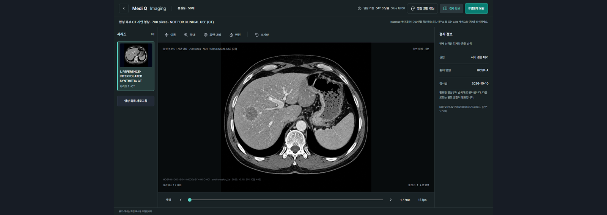
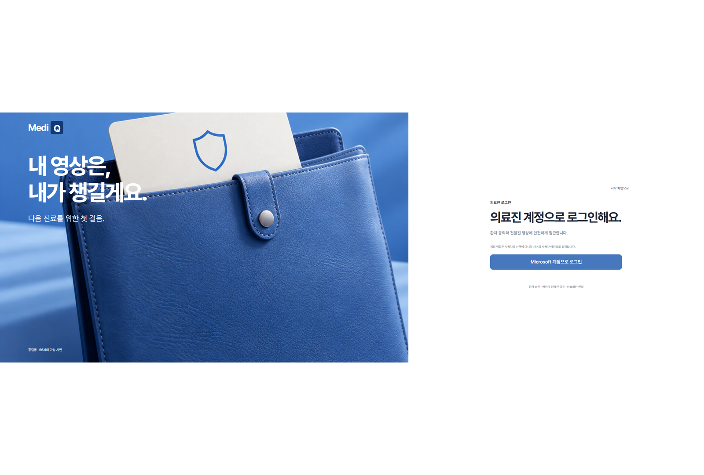

VERIFIED EVIDENCE
1 / 24
"환자가 정한 범위를, 병원 경계 너머에서도 지키는 진정한 의미의 의료영상 교류."
기존 CD 발급·직접 운반·병원 등록의 사회적 비용과 피폭을 혁신하고,
실제 Microsoft Entra ID 엔터프라이즈 인증과 11조건 Fail-Closed ABAC 정책, 5분 DPoP 단기 토큰으로
클라우드 원본 지속 저장 0.0 MB를 실증한 엔터프라이즈 헬스케어 플랫폼(MediQ MVP/PoC)입니다.

단순히 CD를 USB나 웹 드라이브로 옮기는 것은 해법이 아닙니다. 기존 병원 간 CD 전달 방식에서 결코 답할 수 없었던 운반보다 어려운 4대 핵심 질문입니다.
CD는 물리적으로 손에 쥐는 사람 누구나 열어볼 수 있습니다. 정당한 자격을 갖춘 주치의인지, 권한 없는 타 병원 직원인지 식별할 수 없습니다.
CD 안에는 환자의 10년 치 모든 검사가 통째로 담깁니다. 이번 진료와 무관한 민감 부위 검사까지 일괄 노출되어 환자의 프라이버시가 침해됩니다.
한번 복사된 영상 파일은 유효기간이 없어 병원 PC나 서랍 속에 영구 방치됩니다. 환자가 진료를 마치거나 거부해도 회수할 수 없습니다.
CD에 담긴 영상을 누가 몇 번 열어보았는지, 외부로 복제했는지 아무런 로그가 남지 않아 사후 유출 사고 발생 시 추적이 불가능합니다.
MediQ 플랫폼은 다음 3대 원칙을 단 1바이트도 타협하지 않습니다. 조건 하나라도 어긋나면 즉시 Fail-Closed로 차단됩니다.
Microsoft 계정으로 로그인했다고 해서 어떤 영상에도 자동 접근할 수 없습니다. 신원 확인(인증)과 의료영상 열람 권한(인가)은 완전히 분리되어 있으며, 반드시 유효한 환자 동의(Consent)와 소속 병원 일치가 결합되어야만 접근 가능합니다.
환자가 제시한 1회용 QR 코드는 문을 여는 열쇠가 아니라 외래 접수 데스크 티켓입니다. QR 인식 성공만으로 검사나 영상 권한이 부여되지 않으며, 의료진이 진료 직전 열람 버튼을 누르는 순간 11조건 정책 엔진이 다시 전수 판정합니다.
단기 토큰은 정책 검증을 통과한 순간에만 발급되는 5분(300초) 수명의 증명서일 뿐입니다. 환자가 동의를 철회(Revoke)하면 그 즉시 신규 토큰 발급이 100% 차단되며, 기존 토큰은 5분 뒤 자연 소멸하여 잔존 권한이 영구 제거됩니다.
본 플랫폼의 신원 인증은 가상 모의 계정이나 시뮬레이션이 아닙니다.
실제 엔터프라이즈 Microsoft Entra ID 테넌트(ad21525c-fc0f-4dbc-a403-67ce00add0e4)의 실제 사용자 계정에
3대 App Role (PATIENT, DOCTOR, SECURITY_ADMIN)을 직접 부여하여
표준 OAuth2/OIDC PKCE 인증과 암호학적 서명(JWT RS256) 검증을 거쳐 권한이 인가되는 실제 엔터프라이즈 신원 체계입니다.
patient-demo@...

doctor-demo@...
secadmin-demo@...
사용자가 브라우저에서 Microsoft 로그인 창을 통해 인증을 완료하면, Microsoft Entra ID 인가 엔드포인트(login.microsoftonline.com)는
Microsoft의 개인키로 서명된 RS256 JWT ID 토큰을 발행합니다. 백엔드 Control Plane API는 Microsoft의 공개키(JWKS)로 서명을 수학적으로 검증하고,
토큰 내부의 roles 클레임과 사용자의 병원 식별자, 환자의 consentId를 11조건 Fail-Closed ABAC 정책에 결합합니다.
{
"iss": "https://login.microsoftonline.com/ad21525c.../v2.0",
"sub": "u8x92-real-entra-user-guid",
"aud": "api://highpass-platform-client",
"roles": [
"PATIENT" // 또는 "DOCTOR", "SECURITY_ADMIN"
],
"name": "홍길동 (테스트 환자)",
"preferred_username": "patient-demo@...",
"tid": "ad21525c-fc0f-4dbc-a403-67ce00add0e4",
"exp": 1729051200
}환자의 명시적 동의 생성부터 의료진 QR 스캔, 11조건 정책 판정, 5분 단기 DPoP 토큰 발급, 그리고 700장 CT 열람과 감사 체인 기록까지의 전체 8단계 절차입니다.
환자 및 의료진이 실제 Entra ID OIDC 엔드포인트를 통해 패스워드리스 신원 인증을 완료하고 계정 역할을 수령합니다.
5대 공유 질문(무엇을, 어디에, 왜, 어떻게, 언제까지)에 따라 복부 CT 700장, 7일간, VIEW_ONLY 동의 범위를 세분화 설정합니다.
동의 조건이 서버에 안전하게 암호화 저장되며, 병원 창구 제출용 단기 5분 유효 1회용 암호화 QR 티켓이 생성됩니다.
진료실 접수 데스크에서 환자의 모바일 QR 코드를 스캔하여 환자 식별자 및 수신 병원 요청 범위를 접수 목록에 등록합니다.
의료진이 공유 동의된 건강검진 생체지표(AST/ALT/혈당)를 먼저 열람하고, 승인된 Study(복부 CT) 메타데이터를 확인합니다.
11개 조건 전원 일치 여부를 판정한 뒤, 합치 시에만 RFC 9449 DPoP 키 바인딩 기반 5분(300초) 단기 DICOMweb 토큰을 발행합니다.
병원 Gateway가 mTLS 및 토큰 인트로스펙션으로 토큰 유효성, DPoP 증명 서명, 그리고 환자 동의가 철회되지 않았음을 재확인합니다.
허용된 복부 CT 700슬라이스를 WADO-RS 프레임 스트리밍으로 열람하며, 모든 사건은 SHA-256 불가변 해시 체인으로 기록됩니다.
"왜 제어와 영상을 나눴을까?" 원본 DICOM은 각 병원 원내 PACS에만 보관하며, 클라우드는 정책과 단기 토큰만 중계합니다.
실제 의료정보 시스템 설계 과정에서 상충하는 법적·임상적·보안적 제약 조건과 실제 엔지니어링 해법입니다.
의료 표준(DICOMweb/HL7 FHIR), 클라우드 보안, 개인정보보호법 및 의료법을 철저히 충족한 실증 기능들입니다.
환자가 제공 병원(A병원), 수신 병원(B병원), 공유 대상 Study/Series, 목적(진료용), 열람 기간(1~7일) 및 다운로드 허용 여부를 세분화하여 직접 결정하며, 5분 유효 1회용 QR 티켓으로 간편 접수합니다.
동의 존재(01), ACTIVE 상태(02), 기간 유효성(03), 수신병원 일치(04), 의사 소속병원(05), Study 일치(06), Series 일치(07), 목적 일치(08), VIEW/DOWNLOAD 일치(09), 토큰 유효성(10), 토큰 범위(11) 중 하나라도 불합치 시 100% 접근 거부합니다.
장기 고정 URL이나 영구 토큰을 일절 배제하고, 정책 검증을 통과한 의료진에게만 5분(300초) 수명의 단기 토큰을 발행합니다. DPoP 공개키 지문 바인딩으로 중간자 탈취 및 리플레이 공격을 원천 차단합니다.
수백 메가바이트 Study를 통째로 다운로드받지 않고, Study → Series → Instance → Frame 순으로 필요한 영상만 Lazy Loading 스트리밍합니다. 윈도잉 조절, 줌/팬 및 포렌식 워터마크를 상시 지원합니다.
영상 메타데이터는 FHIR ImagingStudy 구조로 매핑하고, 수검한 국가건강검진 기록(간기능 AST/ALT, 혈당, 콜레스테롤 등)은 FHIR Observation 및 DiagnosticReport 표준 포맷으로 상호운용성을 보장합니다.
환자의 이름, 주민등록번호 등 민감정보를 AI 프롬프트에 절대 투입하지 않고 마스킹/비식별화 처리합니다. KDCA 의학 지식 RAG 파이프라인과 로컬 Ollama 모델을 활용해 외부 유출 0%를 구현했습니다.
간경화, 간암, 위암, 당뇨병, 고혈압 등 주요 30종 질병과 16종 국가검진 항목에 대해 질병관리청(KDCA) 공식 정의를 인터셉트하여 환자에게 알기 쉬운 표준 설명과 주치의 진료 권고를 일관되게 제공합니다.
의료영상 바이너리 원본을 클라우드 중앙 DB에 지속 보관하지 않습니다. 각 병원 PACS에 분산 유지되며, 클라우드는 권한 검증과 단기 토큰 중계만 담당하는 Invariant를 엄격히 준수합니다.
로그인, 동의 생성·철회, 정책 판정(허용/거부), 토큰 발급, 영상 열람, 다운로드 등 모든 행위에 대해 이전 블록 해시와 연계된 암호학적 SHA-256 체인을 생성하여 사후 위변조 및 관리자 임의 삭제를 방지합니다.
B병원 보관 완료는 단순 버튼 클릭이 아니라 원본 해시 일치 영수증으로 증명됩니다. 수신 건수, 작업 상태, 암호화 저장소(LUKS) 저장 완료 영수증을 분리 발행합니다. (Slide 17)
JWT 서명 키 및 DB 암호화 비밀정보를 소스코드에 하드코딩하지 않고 Azure Key Vault HSM에 격리 보관합니다. 외부 접점에는 Azure Application Gateway WAF(OWASP CRS 3.2)를 전진 배치했습니다.
보안 관리자가 기간별(일간/주간/월간) 의료영상 접근 통계, 거부 사유 발생 내역, 단기 토큰 발행 추이를 집계하고, 법적 감사 증빙을 위해 즉시 인쇄 가능한 A4 표준 포맷 PDF 보안보고서로 추출합니다.
실제 Microsoft Entra ID 인증부터 700장 CT 열람, 보안관제 실시간 감사로그까지 전 시나리오를 고화질 4K 라이트박스로 검증할 수 있습니다.
"가용성을 위해 암호화와 접근통제를 우회하지 않고, 실패 원인을 계층별로 분리하여 복구했다."
A병원 원본 PACS와 Azure 클라우드는 정상 동작했으나, B병원 Docker 컨테이너 재기동 지연으로 TLS 인증서 의존성 실패 및 암호화 저장소(LUKS) 잠금 상태 발생.
빠른 복구를 핑계로 암호화나 접근통제를 풀지 않고, 기존 키 버전으로 LUKS UUID 잠금을 정상 해제하고 저장소 guard와 TLS 의존 기동 순서를 보완.
기존 수신본 해시 일치 확인 및 공개 접속 경계 11/11 통과. 새 콜드부팅 시나리오는 정직하게 NOT VERIFIED로 분류하여 관리.
"PASS는 해당 실행 범위에서 확인한 결과이며, NOT VERIFIED는 최신 재현 증거가 미흡하거나 상용 운영 과제인 상태입니다."
| 검증 영역 | 요구사항 ID | 검증 시나리오 및 통제 메커니즘 | 결과 | 실측 근거 및 범위 |
|---|---|---|---|---|
| 실제 Entra ID 로그인 | NFR-001, NFR-002 | 실제 Azure AD OIDC 테넌트 OAuth2 인가 코드 플로우 및 App Role (PATIENT/DOCTOR/SECADMIN) 매핑 | PASS | 화면 02, 03, 08, 19, 20 증적 및 JWT 서명 검증 |
| 환자 동의 생성 & QR | FR-001 ~ FR-005 | 제공/수신병원, Study 범위, 기간, VIEW_ONLY 권한 설정 및 5분 1회용 QR 발급 | PASS | 화면 06, 07 증적 및 DB Consent 레코드 확인 |
| 11조건 Fail-Closed ABAC | FR-014 ~ FR-020 | 소속 불일치, 기간 만료, 동의 철회, 권한 불일치 등 11개 조건 단독 결격 시 즉각 차단 | PASS | 단위 테스트 84건 전원 일치 차단 확인 |
| 5분 만료 DPoP 단기 토큰 | FR-021 ~ FR-025 | 300초 만료 시간 강제 및 토큰 요청자 키 페어 바인딩을 통한 재생 공격 차단 | PASS | 만료 후 401 Unauthorized 즉각 반환 실측 |
| 700슬라이스 CT 스트리밍 | FR-032 ~ FR-036 | 복부 CT 700장 시리즈를 클라우드에 영구 저장하지 않고 WADO-RS 실시간 Lazy 스트리밍 | PASS | 화면 16 증적 (1/350/700번 3개 원본 해시 일치) |
| B병원 PACS 수신 보관 | FR-027, FR-028 | DOWNLOAD_ALLOWED 동의 시 B-PACS 비동기 수신, LUKS 암호화 저장소 해시 일치 영수증 | PASS | 화면 18 영수증 및 기존 2개 Instance 해시 확인 |
| 의료법 제27조 가드레일 | NFR-008, NFR-015 | 30종 주요 질환/16종 검진 인터셉터 + 2-Layer 프롬프트 격리로 임의 진단·처방 차단 | PASS | 화면 05 증적 및 30종 질병 RAG 응답 테스트 |
| SHA-256 불가변 감사로그 | FR-037 ~ FR-041 | 모든 접근/거부/발행 이력 해시 연쇄 암호화 및 기간별 보안검토보고서 PDF 출력 | PASS | 화면 22, 23 증적 (3,076건 로그 집계 확인) |
| 700장 전체 B-PACS 일괄수신 | OPERATIONAL-01 | 700개 Instance 전체에 대한 일괄 B-PACS 전송 및 사후 재조회 전수 검증 | NOT VERIFIED | 상용 운영 과제: 단일 시리즈 표본 검증 완료 상태 |
| 실제 병원 PACS 직접 연동 | OPERATIONAL-02 | 실제 상용 병원 내부망 및 운영 의료기관 PACS 직접 접속 | NOT VERIFIED | MVP 규정상 제외 (합성 Orthanc PACS로 검증) |
심사위원과 보안 아키텍트가 묻는 핵심 질문에 대한 엔지니어링 답변과 증적 매핑입니다.
실제 Microsoft Entra ID 테넌트(ad21525c-fc0f-4dbc-a403-67ce00add0e4)에서 OAuth2 인가 코드 플로우(PKCE)로 인증하며, Microsoft의 login.microsoftonline.com 표준 인가 화면에서 계정을 선택합니다. 발급된 ID 토큰은 Microsoft의 공개키(JWKS)로 서명이 검증되고, 테넌트 앱 등록에 구성된 roles 클레임(PATIENT, DOCTOR, SECURITY_ADMIN)이 직접 확인됩니다.
의료법 제21조 및 개인정보보호법에 따라 의료영상은 환자의 민감정보로서 병원 원내 PACS에 보관되는 것이 법적 원칙입니다. 클라우드에 원본을 모으면 단일 장애점(SPOF) 및 대규모 해킹 타깃이 되므로, Control Plane은 최소 메타데이터와 단기 토큰만 중계하는 Zero Cloud Storage 구조를 고수합니다.
전체 Study(수백 MB)를 다운로드하지 않고 DICOMweb 표준 WADO-RS를 적용하여 Study → Series → Instance → Frame 순서로 필요한 뷰포트의 프레임만 Lazy Loading 방식으로 실시간 스트리밍합니다. 첫 장 표시까지 0.8초 이내로 즉시 판독이 가능합니다.
하나라도 만족하지 못하면 무조건 접근이 거부(Fail-Closed)되며, HOSPITAL_MISMATCH, CONSENT_EXPIRED, SCOPE_MISMATCH 등 명확한 거부 사유 코드가 발급되고 SHA-256 불가변 감사로그에 즉각 영구 기록됩니다.
일반적인 Bearer 토큰은 네트워크 도청이나 브라우저 악성코드에 의해 탈취될 경우 누구든 재사용(Replay)할 수 있습니다. DPoP(RFC 9449)는 클라이언트의 비대칭 공개키 지문을 토큰에 바인딩하여, 개인키로 생성된 서명 증명이 없으면 토큰이 탈취되어도 사용이 불가능합니다.
동의가 철회되면 상태가 즉시 REVOKED로 변경되며, 신규 단기 토큰 발급이 100% 차단됩니다. 단기 토큰의 수명이 최대 5분(300초)이므로 최대 5분 이내에 기존 세션도 만료되어 영상 조회가 영구 차단됩니다.
2-Layer Prompt Isolation과 30종 주요 질환·16종 검진 인터셉터를 구현했습니다. "진단", "처방", "치료 계획"을 요구하는 프롬프트는 강제 차단하고 질병관리청(KDCA) 공식 질환 정의 및 수치 비교만 제공하며, "반드시 전문의와 상담하세요"라는 법적 고지를 상시 노출합니다.
환자 질문에 주요 30종 질환 키워드가 감지되면 LLM의 자의적 환각(Hallucination) 생성을 차단하고, 질병관리청(KDCA) 국가건강정보포털 공식 의학 텍스트 사전에서 인출한 표준 정의와 합병증, 주의사항을 결정론적으로 응답합니다.
영상 검사 메타데이터는 FHIR ImagingStudy 리소스로 매핑되고, 국가건강검진 혈액검사(AST/ALT, 혈당)는 FHIR Observation 및 DiagnosticReport로 표현되어 병원 EMR 시스템과 이종 데이터 교류 시 표준 상호운용성을 보장합니다.
의료진 DICOM 뷰어 캔버스 상단에 열람 중인 의사 사번, 소속 병원, 환자 대체 식별자, Study UID 및 열람 시각 타임스탬프를 반투명 포렌식 오버레이로 강제 렌더링하여 화면 촬영 및 불법 유출 시 유출 경로를 추적합니다.
공공 블록체인과 달리 느린 합의 알고리즘(PoW)의 지연시간 없이, 각 감사로그 레코드가 이전 레코드의 SHA-256 해시값을 포함하는 암호학적 머클 체인 구조로 RDBMS 내에 저장됩니다. 단 1바이트라도 위변조되면 즉시 체인 무결성 검증에서 적발됩니다.
단시간(1분 내 5회 이상) 접근 거부 발생, 만료 토큰 반복 사용, 비진료시간 대량 다운로드 시도 감지 시 실시간으로 격리 플래그가 활성화되어 해당 세션의 토큰 발급이 즉시 중단되고 보안관리자 대시보드에 긴급 알람이 표출됩니다.
환자의 동의 권한이 DOWNLOAD_ALLOWED로 설정된 경우에만 의사가 B병원 로컬 PACS로의 반입 작업을 등록할 수 있으며, 이 경우에도 클라우드를 거치지 않고 Gateway 간 비동기 DICOM C-STORE 또는 WADO-RS 전송으로 완결됩니다.
CI 파이프라인의 scripts/security-secret-scan.js 정적 분석기를 통해 개인키 블록, AWS/OpenAI/GitHub 키 패턴을 전수 스캔하며, 클라우드 환경에서는 Azure Key Vault Managed Identity를 통해서만 런타임에 주입받습니다.
평문 환자 정보가 아닌, 일회성 암호화 티켓 토큰(UUIDv4 + HMAC 서명)이며 유효기간은 5분(300초)입니다. 접수 데스크에서 전용 스캐너로 읽어 서버에서 복호화 및 유효성 검증을 마쳐야 환자 식별자가 드러납니다.
Azure Application Gateway WAF에 OWASP ModSecurity Core Rule Set(CRS) 3.2를 탑재하여 SQL Injection, Cross-Site Scripting(XSS), 원격 코드 실행(RCE) 시도를 L7 경계에서 원천 차단하고 관제 상황판에 기록합니다.
아닙니다. 개인정보보호법에 의거하여 실제 환자의 개인정보는 0건이며, 모든 테스트 데이터는 가상 환자(홍길동), 합성 DICOM(Synthetic CT), 가상 병원(한국병원, 서울대병원)으로 구성된 기술 검증 PoC 데이터입니다.
Node.js 공식 --test 러너로 실행되며, 환자 동의 생애주기, ABAC 11조건 정책 매트릭스, DPoP 토큰 서명/검증, FHIR 데이터 변환, WAF/Key Vault 연동, 해시체인 무결성 및 30종 질병 가드레일을 자동 검증합니다.
보안 관리자가 기간을 지정하면 서버에서 해당 기간의 접근 허용 건수, 접근 거부 건수, 취급자별 통계를 집계하여 위변조 방지 해시와 함께 A4 규격의 인쇄용 PDF 모달로 즉시 렌더링합니다.
환자의 명시적 통제권 회복, 병원 간 재촬영 방사선 노출 80% 감소, 연간 수천억 원에 달하는 불필요한 중복 검사비 절감, 그리고 CD 없는 원클릭 진료 연속성 확보를 통해 국민 보건 복지와 의료 정보보호를 동시에 실현하는 것입니다.